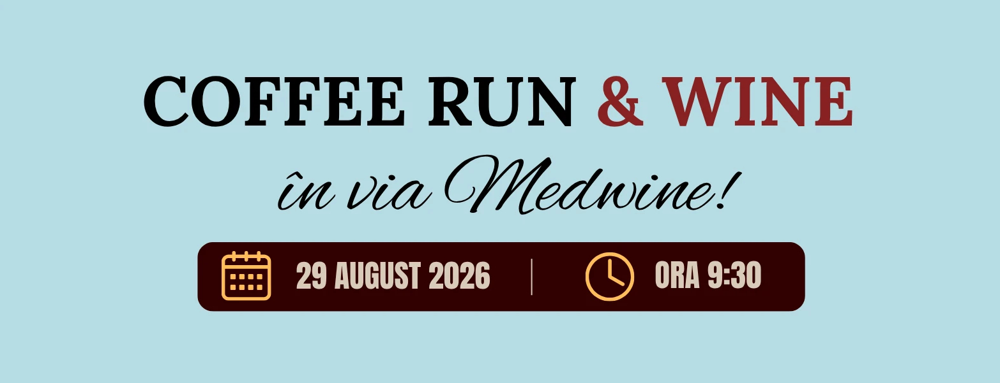
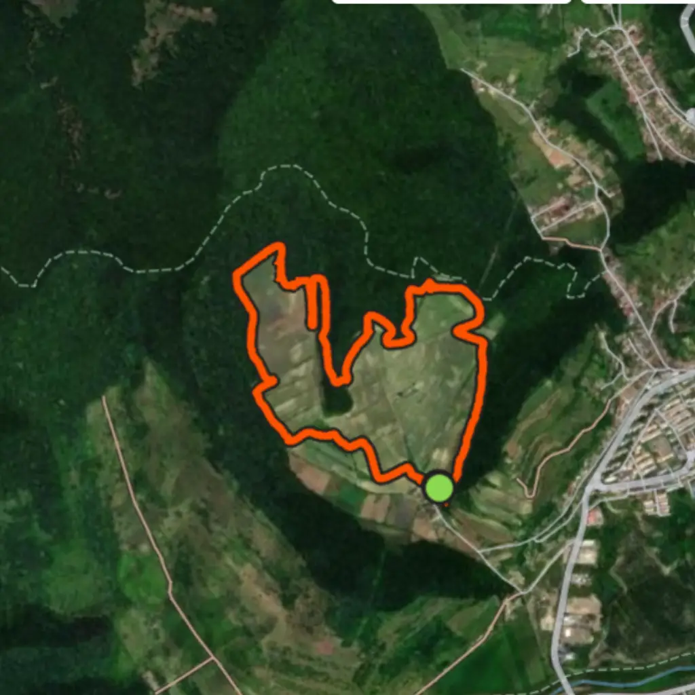
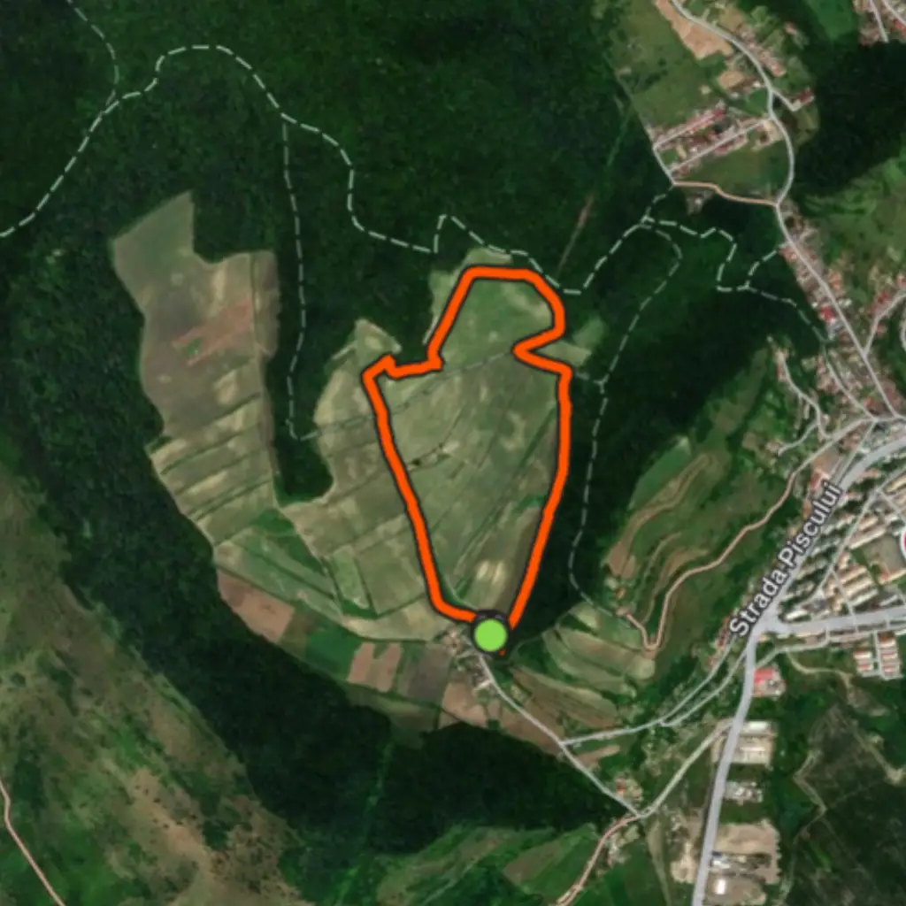
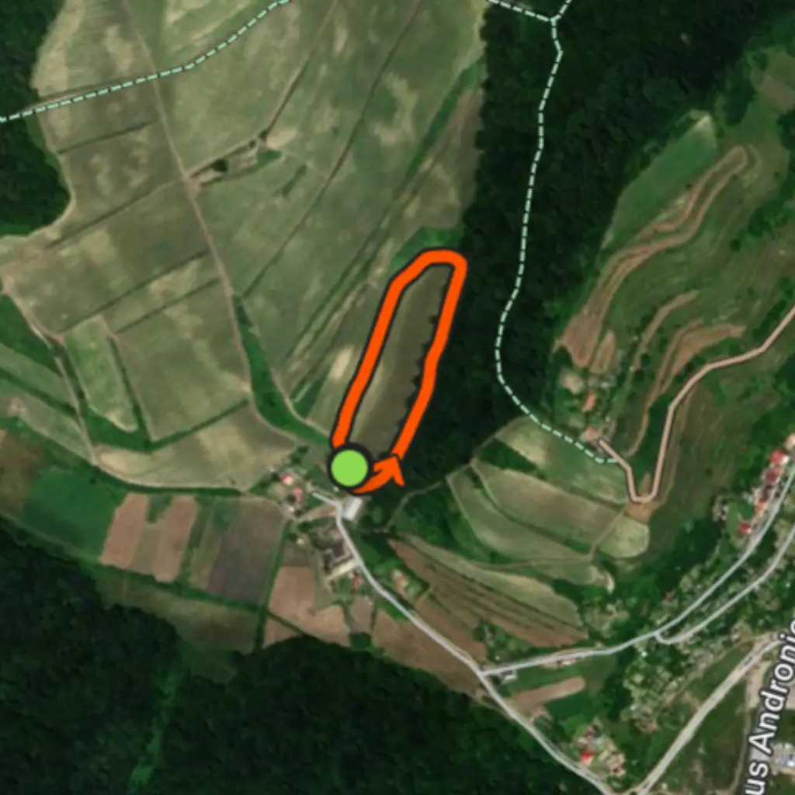

Au mai rămas:
FINALIZAT
29 August, Ora 9:30
Taxă de participare:
<10 ani - GRATUIT
10-17 ani - 20 RON
Adulți - 70 RON
* Înscrierea se face la Bean Roasters Centru (Strada Petőfi Sándor 2) sau la The Wine Corner (Strada Johannes Honterus 40)
* Și copiii sub 10 ani trebuie înscriși
Pentru participarea la eveniment este necesară completarea declarației pe proprie răspundere:
⬇ DECLARAȚIE ⬇ DECLARAȚIE MINORI ⬇ DECLARAȚIE MINORI - CLUBURIStart: Via Medwine
DESPRE .
🍇🏃♂️ Coffee Run & Wine - alergare în via Medwine! 🍷
Pe 29 august, de la ora 9:30, vă invităm la o alergare specială în cadrul Povestea Vinului la Mediaș, direct printre viile Medwine! 🌿
Va fi o dimineață cu alergare, voie bună, socializare și o cauză frumoasă. ❤️
TRASEE .

5.0 KM
Wine Run

2.25 KM
Coffee Run

650m
Kids Run
ORGANIZATORI